The Matrix class¶
This is the basic building block of the library: its purpose it to provide convenient mechanisms for performing basic matrix manipulation operations, such as setting and querying individual matrix entries, without giving up compatibility with interfaces such as BLAS and LAPACK, which assume column-major storage.
An example of generating an  matrix of real double-precision
numbers where the
matrix of real double-precision
numbers where the  entry is equal to 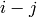 would be:
entry is equal to 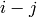 would be:
#include "elemental.hpp" using namespace elem; ... Matrix<double> A( m, n ); for( int j=0; j<n; ++j ) for( int i=0; i<m; ++i ) A.Set( i, j, (double)i-j );
The underlying data storage is simply a contiguous buffer that stores entries in a column-major fashion with an arbitrary leading dimension. For modifiable instances of the Matrix class, the routine T* Matrix<T>::Buffer() returns a pointer to the underlying buffer, while int Matrix<T>::LDim() const returns the leading dimension; these two routines could be used to directly perform the equivalent of the first code sample as follows:
#include "elemental.hpp" using namespace elem; ... Matrix<double> A( m, n ); double* buffer = A.Buffer(); const int ldim = A.LDim(); for( int j=0; j<n; ++j ) for( int i=0; i<m; ++i ) buffer[i+j*ldim] = (double)i-j;
For constant instances of the Matrix class, a const pointer
to the underlying data can similarly be returned with a call to
A.LockedBuffer(). In addition, a (const) pointer to the place in the
(const) buffer where entry resides can be easily retrieved
with a call to A.Buffer(i,j) or A.LockedBuffer(i,j).
It is also important to be able to create matrices which are simply views
of existing (sub)matrices. For example, if A is a 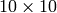
matrix of complex doubles, then a matrix  can easily be created
to view the bottom-right 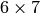 submatrix using
can easily be created
to view the bottom-right 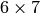 submatrix using
#include "elemental.hpp" ... Matrix<Complex<double> > ABR; ABR.View( A, 4, 3, 6, 7 );
since the bottom-right submatrix beings at index
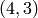. In general, to view the 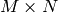 submatrix starting
at entry , one would call ABR.View( A, i, j, M, N );.
- class Matrix<T>¶
Constructors
- Matrix()¶
This simply creates a default 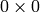 matrix with a leading dimension of one (BLAS and LAPACK require positive leading dimensions).
- Matrix(int height, int width)¶
A height 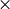 width matrix is created with an unspecified leading dimension (though it is currently implemented as std::max(height,1)).
- Matrix(int height, int width, int ldim)¶
A height width matrix is created with a leading dimension equal to ldim (which must be greater than or equal std::min(height,1)).
- Matrix(int height, int width, const T* buffer, int ldim)¶
A matrix is built around column-major constant buffer const T* buffer with the specified dimensions. The memory pointed to by buffer should not be freed until after the Matrix object is destructed.
- Matrix(int height, int width, T* buffer, int ldim)¶
A matrix is built around the column-major modifiable buffer T* buffer with the specified dimensions. The memory pointed to by buffer should not be freed until after the Matrix object is destructed.
- Matrix(const Matrix<T>& A)¶
A copy (not a view) of the matrix
 is built.
is built.
Basic information
- int Height() const¶
Return the height of the matrix.
- int Width() const¶
Return the width of the matrix.
- int DiagonalLength(int offset=0 ) const¶
Return the length of the specified diagonal of the matrix: an offset of
 refers to the main diagonal, an offset of 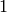 refers to
the superdiagonal, an offset of 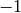 refers to the subdiagonal,
etc.
refers to the main diagonal, an offset of 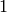 refers to
the superdiagonal, an offset of 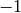 refers to the subdiagonal,
etc.
- int LDim() const¶
Return the leading dimension of the underlying buffer.
- int MemorySize() const¶
Return the number of entries of type T that this Matrix instance has allocated space for.
- T* Buffer()¶
Return a pointer to the underlying buffer.
- const T* LockedBuffer() const¶
Return a pointer to the underlying buffer that does not allow for modifying the data.
- T* Buffer(int i, int j)¶
Return a pointer to the portion of the buffer that holds entry
.
- const T* LockedBuffer(int i, int j) const¶
Return a pointer to the portion of the buffer that holds entry
that does not allow for modifying the data.
I/O
- void Print(const std::string msg="") const¶
The matrix is printed to standard output (std::cout) with the preceding message msg (which is empty if unspecified).
- void Print(std::ostream& os, const std::string msg="") const¶
The matrix is printed to the output stream os with the preceding message msg (which is empty if unspecified).
Entry manipulation
- T Get(int i, int j) const¶
Return entry
.
- void Set(int i, int j, T alpha)¶
Set entry
to  .
.
- void Update(int i, int j, T alpha)¶
Add
to entry .
- void GetDiagonal(Matrix<T>& d, int offset=0 ) const¶
Modify
 into a column-vector containing the entries lying on the
offset diagonal of our matrix (for instance, the main diagonal has
offset , the subdiagonal has offset , and the
superdiagonal has offset 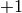).
into a column-vector containing the entries lying on the
offset diagonal of our matrix (for instance, the main diagonal has
offset , the subdiagonal has offset , and the
superdiagonal has offset 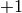).
- void SetDiagonal(const Matrix<T>& d, int offset=0 )¶
Set the entries in the offset diagonal entries from the contents of the column-vector
.
- void UpdateDiagonal(const Matrix<T>& d, int offset=0 )¶
Add the contents of
onto the entries in the offset diagonal.
Note
Many of the following routines are only valid for complex datatypes.
- typename Base<T>::type GetRealPart(int i, int j) const¶
Return the real part of entry
.
- typename Base<T>::type GetImagPart(int i, int j) const¶
Return the imaginary part of entry
.
- void SetRealPart(int i, int j, typename Base<T>::type alpha)¶
Set the real part of entry
to .
- void SetImagPart(int i, int j, typename Base<T>::type alpha)¶
Set the imaginary part of entry
to .
- void UpdateRealPart(int i, int j, typename Base<T>::type alpha)¶
Add
to the real part of entry .
- void UpdateImagPart(int i, int j, typename Base<T>::type alpha)¶
Add
to the imaginary part of entry .
- void GetRealPartOfDiagonal(Matrix<typename Base<T>::type>& d, int offset=0 ) const¶
Modify
into a column-vector containing the real parts of the
entries in the offset diagonal.
- void GetImagPartOfDiagonal(Matrix<typename Base<T>::type>& d, int offset=0 ) const¶
Modify
into a column-vector containing the imaginary parts of
the entries in the offset diagonal.
- void SetRealPartOfDiagonal(const Matrix<typename Base<T>::type>& d, int offset=0 )¶
Set the real parts of the entries in the offset diagonal from the contents of the column-vector
.
- void SetImagPartOfDiagonal(const Matrix<typename Base<T>::type>& d, int offset=0 )¶
Set the imaginary parts of the entries in the offset diagonal from the column-vector
.
- void UpdateRealPartOfDiagonal(const Matrix<typename Base<T>::type>& d, int offset=0 )¶
Add the contents of the column-vector
onto the real parts of the
entries in the offset diagonal.
- void UpdateImagPartOfDiagonal(const Matrix<typename Base<T>::type>& d, int offset=0 )¶
Add the contents of the column-vector
onto the imaginary parts
of the entries in the offset diagonal.
Views
- bool Viewing() const¶
Return whether or not this matrix is currently viewing another matrix.
- bool LockedView() const¶
Return whether or not we can modify the data we are viewing.
- void View(int height, int width, T* buffer, int ldim)¶
Reconfigure the matrix around the specified buffer.
- void View(Matrix<T>& A)¶
Reconfigure the matrix around the modifiable buffer underlying A.
- void LockedView(int height, int width, const T* buffer, int ldim)¶
Reconfigure the matrix around the specified unmodifiable buffer.
- void LockedView(const Matrix<T>& A)¶
Reconfigure the matrix around the unmodifiable buffer underlying A.
- void View(Matrix<T>& A, int i, int j, int height, int width)¶
Reconfigure the matrix around the modifiable buffer underlying A, but only the portion that holds the height width submatrix starting at entry (i,j)
- void LockedView(const Matrix<T>& A, int i, int j, int height, int width)¶
Same as above, but the resulting matrix data is unmodifiable.
- void View1x2(Matrix<T>& AL, Matrix<T>& AR)¶
Reconfigure the matrix to use the modifiable buffer that spans the matrices
 and
and  such that it behaves like
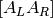 (this routine requires that ‘s buffer begins
at the same memory location that an extra column of would
have).
such that it behaves like
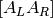 (this routine requires that ‘s buffer begins
at the same memory location that an extra column of would
have).
- void LockedView1x2(const Matrix<T>& AL, const Matrix<T>& AR)¶
Same as above, but the resulting matrix data is unmodifiable.
- void View2x1(Matrix<T>& AT, Matrix<T>& AB)¶
Reconfigure the matrix to use the modifiable buffer that spans the matrices
 and
and  such that it behaves like
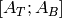 (this routine requires that ‘s buffer begins
at the same memory location that an extra row of would have).
such that it behaves like
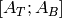 (this routine requires that ‘s buffer begins
at the same memory location that an extra row of would have).
- void LockedView2x1(const Matrix<T>& AT, const Matrix<T>& AB)¶
Same as above, but the resulting matrix data is unmodifiable.
- void View2x2(Matrix<T>& ATL, Matrix<T>& ATR, Matrix<T>& ABL, Matrix<T>& ABR)¶
Reconfigure the matrix to behave like 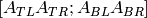 (the buffer requirements are similar to View1x2 and View2x1).
- void LockedView2x2(const Matrix<T>& ATL, const Matrix<T>& ATR, const Matrix<T>& ABL, const Matrix<T>& ABR)¶
Same as above, but the resulting matrix data is unmodifiable.
Utilities
- const Matrix<T>& operator=(const Matrix<T>& A)¶
Create a copy of matrix
.
- void Empty()¶
Sets the matrix to and frees the underlying buffer.
- void ResizeTo(int height, int width)¶
Reconfigures the matrix to be height width.
- void ResizeTo(int height, int width, int ldim)¶
Reconfigures the matrix to be height width, but with leading dimension equal to ldim (which must be greater than or equal to std::min(height,1)).